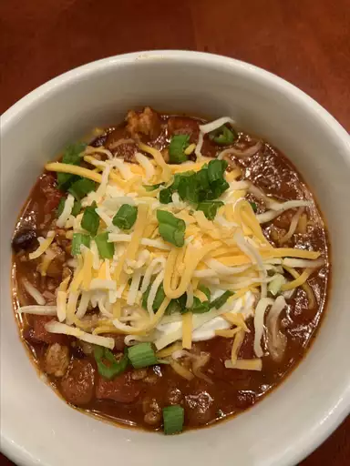

Turkey Chili

Ingredients
- 2 pounds ground turkey
- 1 (28 ounce) can crushed tomatoes
- 1 (15 ounce) can of tomato sauce
- 1 (15.5 ounce) can of kidney beans, rinsed and drained
- 1 (15.5 ounce) can of pinto beans, rinsed and drained
- 1 (15.5 ounce) can of black beans, rinsed and drained
- 1/2 cup chopped onion
- 1 clove garlic, minced
- 1/4 cup red wine
- 2 tablespoons chili powder
- 1 teaspoon ground cumin
- 1 teaspoon dried parsley
- 1 teaspoon dried oregano
- 1/2 teaspoon black pepper
- 1/4 teaspoon crushed red pepper flakes (Optional)
Directions
- Cook and stir the ground turkey in a large pot over medium heat until crumbly and no longer pink, about 5 minutes.
- Stir in the crushed tomatoes, tomato sauce, kidney beans, pinto beans, black beans, onion, garlic, and red wine. Season with chili powder, cumin, parsley, oregano, black pepper, red pepper flakes, and bay leaves.
- Bring to a simmer over medium-high heat, then reduce heat to medium-low, cover, and simmer 2 hours. Stir the chili occasionally as it simmers. Remove and discard bay leaves before serving.
Return to home page